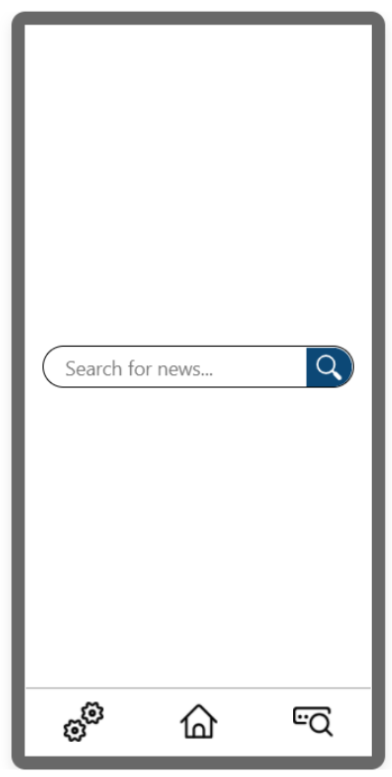
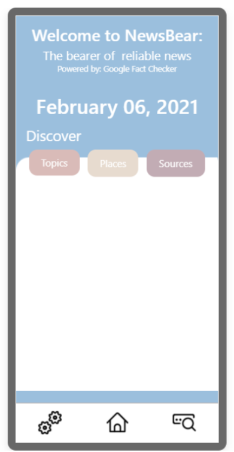
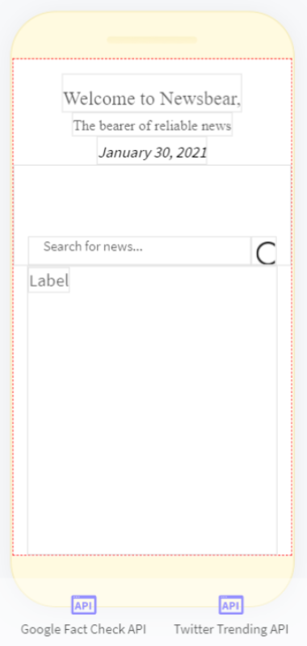
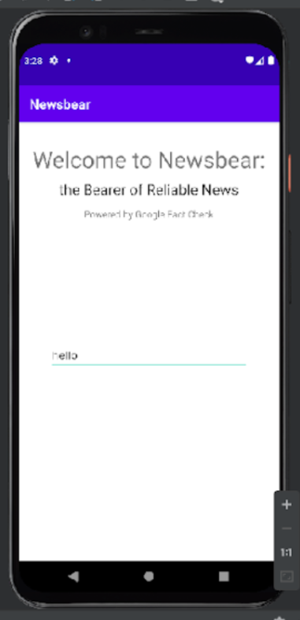

In the age of the internet and social media, teenagers are especially susceptible to fall for fake and uncredited news.
Whether the article is posted to convince the reader of a certain biased siding, or to shock them into sharing for publicity,
propagated manipulation through these posts can negatively and unjustly affect a young person's ability to judge the credibility of what they read.
NewsBear's mission is to promote the sharing of accurate and unbiased information within all communities to create a mindset of curiosity and interest in learning about current events in the minds of teenagers and young adults.
Created by a team of three members, NewsBear is an easy-to-use Android app for teenagers that helps them find and share fact checked news articles.
As part of the Technovation Girls Challenge, the team also had to create a pitch and
viable business plan for the app.
Moreover, the app had to align with one of the UN's Sustainable Development Goals, and the business plan had to
outline the success of the app and company.
Ideation
NewsBear's ideation came from our personal experiences with biased news on social media. After reaching out to 50 other teenagers, we realized that most of them have also had similar experiences:
88% of participants expressed that they have had difficulty determining the credibility of certain news sources.
98% of participants expressed some interest in using our app, and 30% would be willing to pay for the service.
80% of participants stated that they typically get their news from social media, with the main sources being Instagram and TikTok.
Branding
"NewsBear: The bearer of reliable news."
The name “NewsBear” is derived from a play on words with the idiom, “the bearer of bad news” and conveys the image of a bear bringing reliable news
to the readers. Hence, NewsBear's slogan is the “bearer of reliable news.”
Logo Evolution
From this idiom, I began to work on a logo and theme. The logo was originally meant to look more classy and traditional,
pairing with the style of Times New Roman font. However after some iterations, we decided on a more modern-looking font that pairs with sans serif fonts.
The resulting logo is a bear in the shape of a square, mimicking the shape of a social media post. The bear
is formed around the square to represent a sort of safety around the post for the user.
Aesthetics and Psychology
The colour palette builds on the theme of reliability. By using shades of blue,
I hoped to bring the ideas of “trustworthiness” and “security” to mind.
User Interface Design
Iterations
NewsBear went through many iterations in its design, especially as the branding evolved to suit a more modern style.
Originally, the design was more simple, mimicking the design of popular social media apps. For example, the tabs on the bottom
and search result filters were inspired by Instagram. I later decided to combine the search and home page, so that the user would know the functionality
straight away.




The Final Design
Through these iterations, I decided to take the combined home and search page and strong branding to create simple and accessible design that allows easy sharing to other platforms.
Mimicking the quick paced scrolling features and intuitive design of social media platforms, NewsBear provides a familiar environment to its young adult users.
Competitior Analysis
Unlike other fact checkers, NewsBear uses Google's Fact Check API,
which gathers ratings from a number of sources including its competitors.
Thus, the findings are as reliable as possible since it uses multiple sources to gather insight.
Competitior 1: mobile experience lacks usability, and needed information lacks clarity.
Competitior 2: mobile experience has many loud distractions that are unrelated.
NewsBear: easy to use, and needed information can be understood easily.
App Features
These features were carefully added to improve the user's experience:
Welcome and introduction screens to assist first time users.
Large search bar and speech-to-text search to find fact checked articles using keywords from Google's Fact Check API.
Articles include manually rated websites and websites that rate using artificial intelligence.
Suggested topics based on keywords extracted from news headlines within the past 24 hours.
News headlines are gathered from Google's News API.
Keywords are extracted using TextRazor's Keyword Extraction API.
Organized display of the results.
Users may read any of the fact checked articles in their browser.
Users may share the rating and article url to any communication platform.
Users may send a report of a specific article to NewsBear.
Settings can be adjusted and retained for language (English, French, or Spanish) and maximum number of results displayed (5, 10, 20, or 30).
Feedback Incorporation
Throughout the process, I received feedback from survey respondents, teammates, and family.
With this feedback, I specifically added features that improved the app beyond the minimum viable product.
Some of these features include:
Speech-to-text - Provides users with another way to search. This may be helpful for users with visual disabilities.
Language Options - Users have options to change the language results to English, Spanish, or French.
Reporting - Users can report a post to NewsBear if they deem the content inappropriate.
Outcomes and Lessons
Overall, this compeition was an amazing way for me to challenge myself and learn a lot about the process of creating an app and business.
As a result from our efforts, my team placed as a national semifinalist among
1700+ other mobile apps that were submitted for the competition.
Feedback from the judges has shown me the importance of a good UI to give the user a good impression. Moreover, it was noted that the app was slow since it needed to call the API each time the user searched,
so that may have contributed to a negative UX, especially when comparing to most commonly used apps. Finally, the app was limited to only being able to be used by Android phone users. This would close
off much of the market when the app is launched.